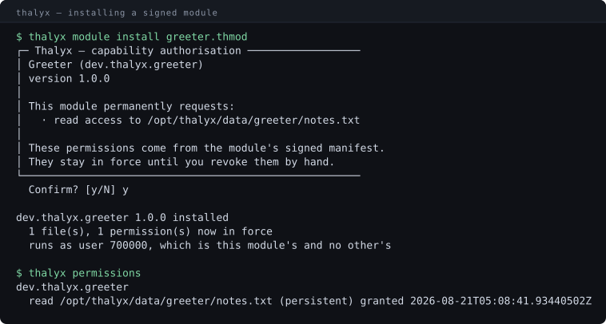
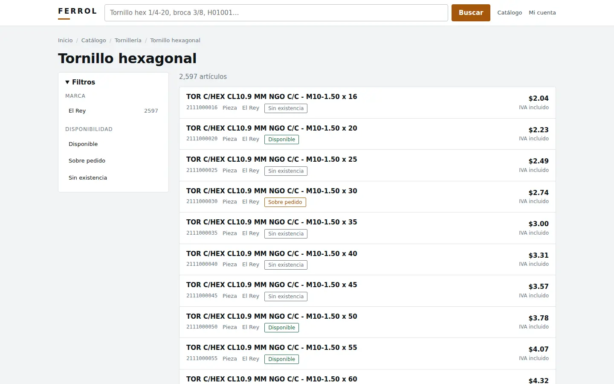
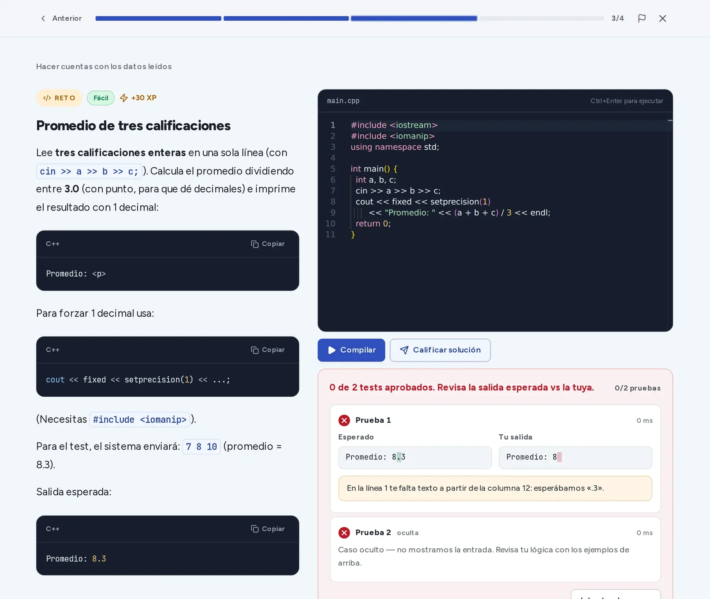
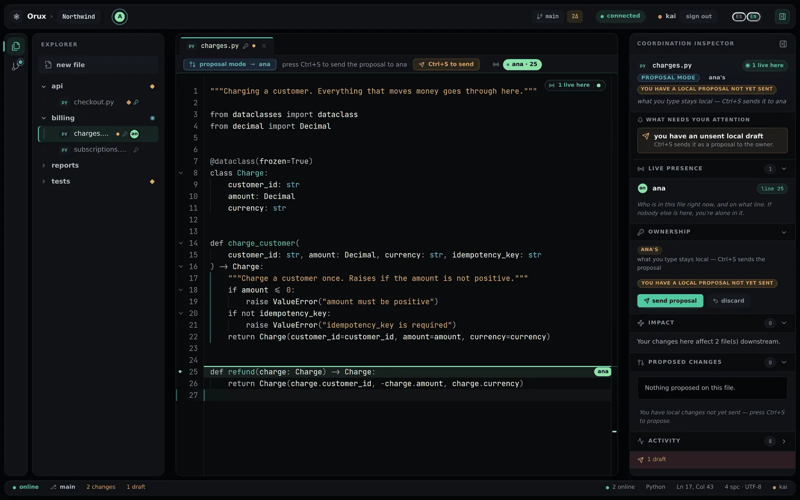

César Manzo · Software engineer · Guadalajara, México
01Operating system

Thalyx
a real PC
02Hardware store

Ferrol
12,027 real products
03Learn to code

Índice Cero
a real compiler
04Live coding on Git

Orux
real Git, in production
05Verification
SupaDiff
real Supabase